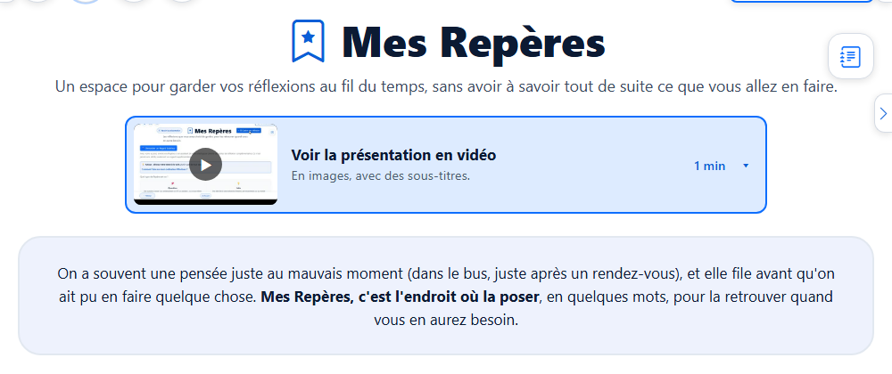
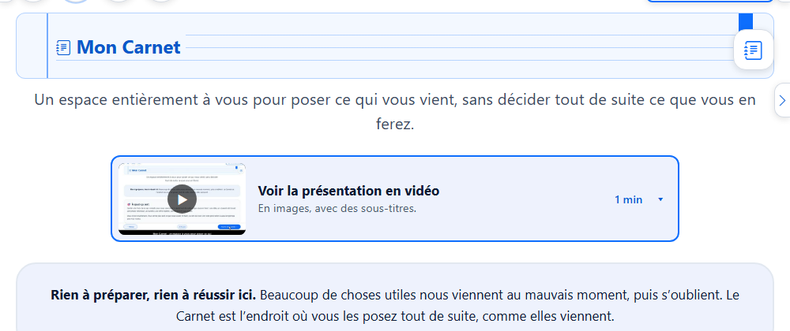
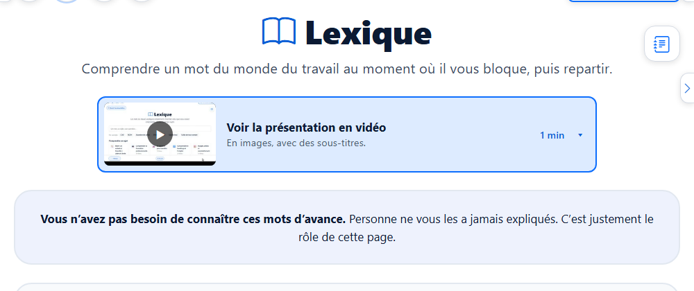
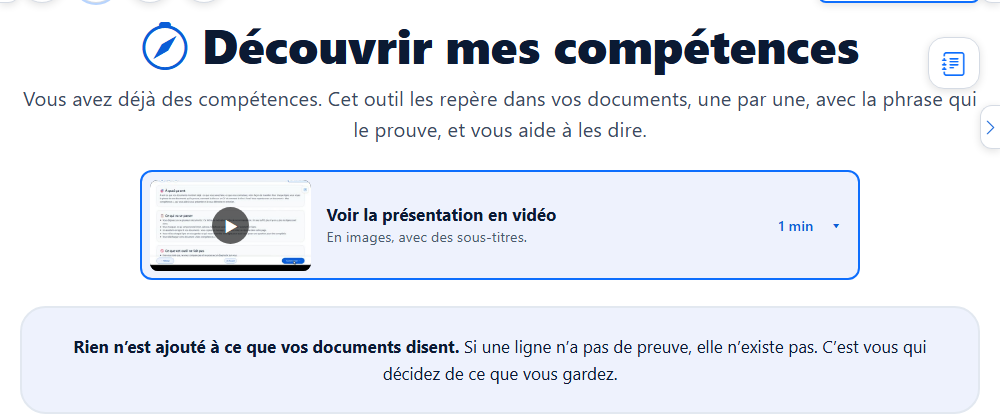
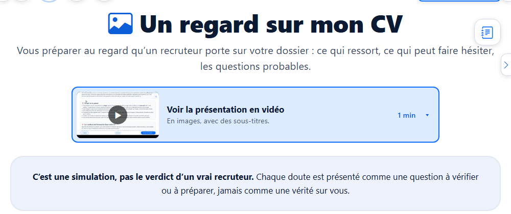
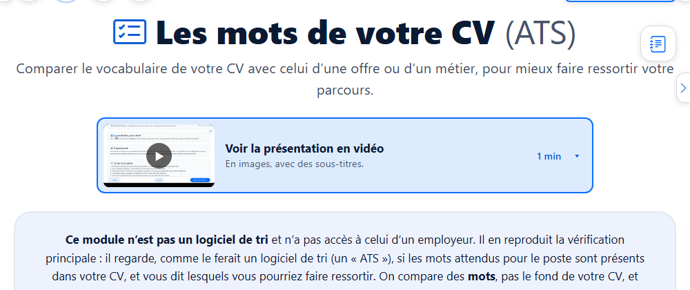
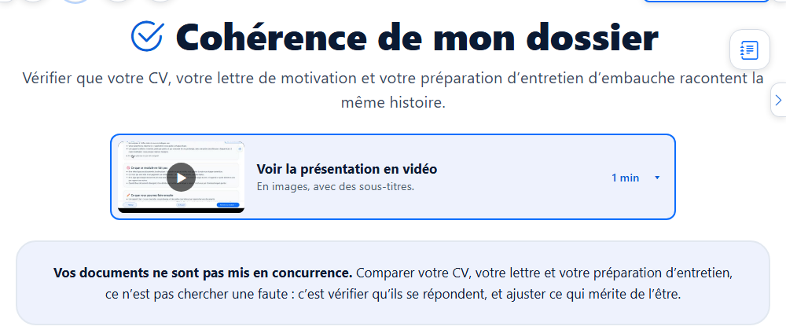
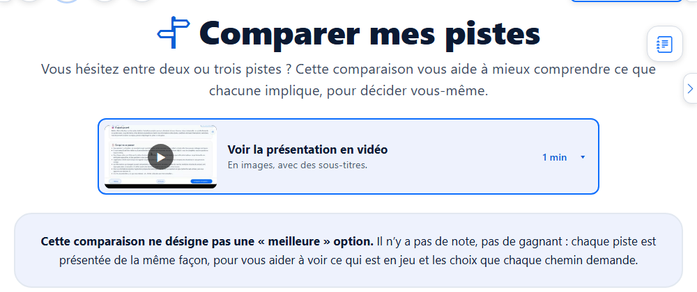
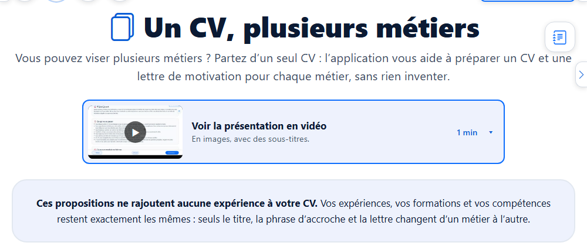

Ces trois rubriques se placent juste après « Vérifier la solidité de votre candidature » et avant « Comprendre ce qui se passe près de chez vous ». La phrase « D'autres outils regardent votre CV… » et la ligne « Une boîte à outils » de « Et aussi » disparaissent : elles sont remplacées par ces rubriques.
Quatre outils que vous ouvrez quand vous en avez besoin, sans ordre imposé et sans que rien ne soit noté. Sur l'accueil, ils sont réunis dans la carte « Boîte à outils ».




En plus de « Analyser ma candidature », trois outils donnent un avis extérieur avant d’envoyer vos documents. Ils demandent un CV déjà prêt.



Une fois que vous avez une ou plusieurs idées de métier, deux outils vous aident à décider et à préparer vos documents. Ils se trouvent dans la carte « Vous hésitez encore ».


Trois diapositives de plus, placées après « Vérifier la solidité de votre candidature » (le diaporama passe de 23 à 26). Chaque diapositive : un titre, une image par module, le nom sous l'image. Les notes de l'orateur sont dessous.
Quatre outils à ouvrir quand vous en avez besoin.
Notes : Les quatre outils de la carte « Boîte à outils ». Aucun ordre, aucune note. Chacun a sa vidéo d’une minute sur sa page.
Un avis extérieur avant d’envoyer vos documents.
Notes : Trois outils, en plus de « Analyser ma candidature ». Aucun n’est une note ni le verdict d’un vrai recruteur : ce sont des pistes à vérifier.
Choisir, puis préparer ses documents.
Notes : Pour celles et ceux qui ont plusieurs idées de métier. La comparaison ne désigne aucune « meilleure » piste.